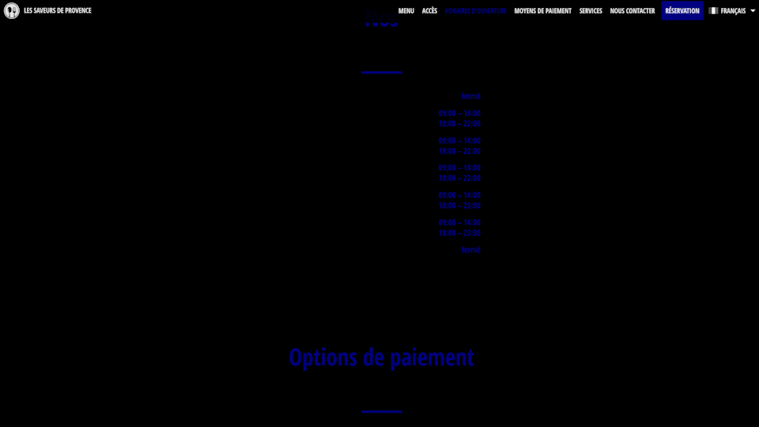
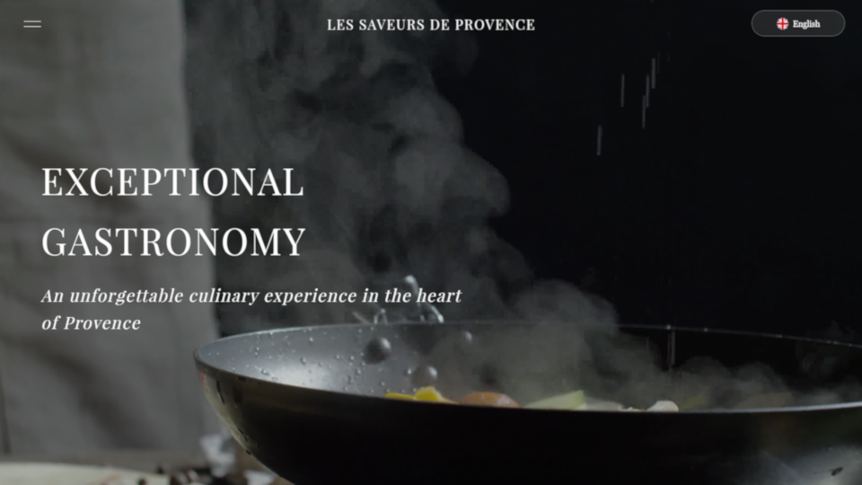
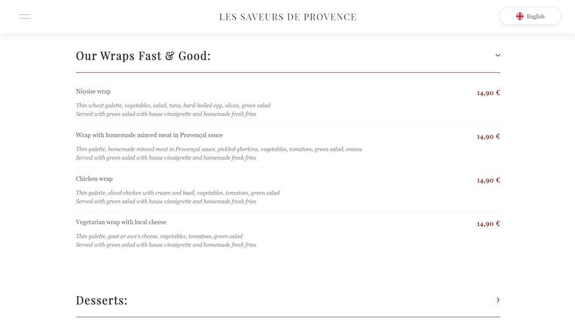
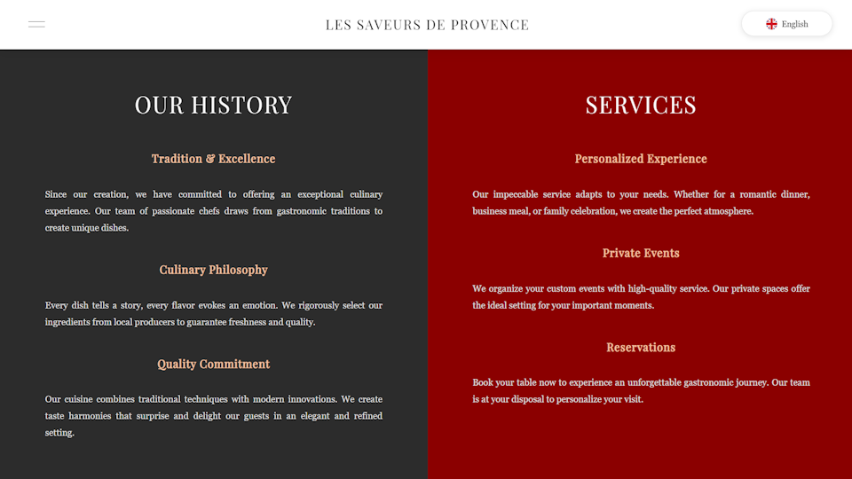
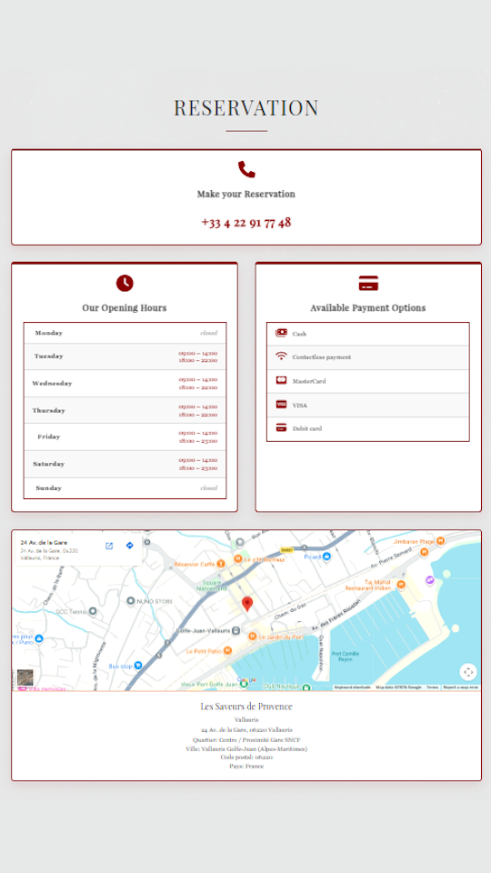

In August 2025, right before starting my design and project management studies at Sophia Ynov Campus, I set myself a self-initiated challenge. I wanted to see if I could build a marketable, high-performing web presence for a real local business. I searched around Vallauris and found Les Saveurs de Provence, a traditional restaurant with an excellent culinary reputation but a visual web presence that was entirely outdated and unusable. The goal: redesign their digital front door to reflect the professionalism, flavor, and standard of a premium dining experience.
A restaurant’s website is the digital front door. If it looks unappetizing, people assume the kitchen is too.
The original website was a structural and visual mess. Massive, unreadable menu PDFs, zero mobile responsiveness, and no real brand storytelling. It did not communicate the passion of the chefs or the quality of the service. Instead of welcoming hungry customers and encouraging bookings, the site was a major point of friction that actively turned mobile users away. The restaurant had a 5-star reputation offline, but a 1-star presence online.

I started with human connection. The redesign features a full-screen, high-definition background video showing the culinary team in action. This instantly establishes the atmosphere of a professional kitchen. Using a video placeholder for their actual restaurant footage, this hero section captures the user’s attention within the first two seconds, communicating high-end hospitality before they read a single line of text.

Dumping a massive PDF menu on a mobile screen is a UX crime. I replaced the traditional menu list with a clean, interactive collapsible accordion system. Diners can toggle between starters, main courses, desserts, and drinks with a single click. The layout stays clean, readable, and highly accessible, allowing users to browse options and prices without feeling overwhelmed by information overload.

Provence is about heritage and fresh ingredients. I built a dedicated section for the restaurant’s story, showcasing their core values and commitments to local sourcing. By framing the restaurant as a family of passionate artisans rather than just another commercial kitchen, the design creates an emotional value proposition that justifies the premium positioning of their menu.

Every restaurant website exists to drive two actions: finding the location and booking a table. I designed a highly visible contact and booking block, complete with clear phone numbers, localized Google Maps integration, and operating hours. No navigation loops, no hidden pages. Just simple, direct pathways to conversion.

Good design doesn’t make the food taste better. It makes people want to sit down and try it.
A fully responsive, marketing-driven landing page built from the ground up using vanilla HTML, CSS, and JavaScript. This project served as my ultimate sandbox before starting formal studies, allowing me to master standard frontend layouts, responsive media styling, and interactive UI states. It proved that redesigning for local businesses is not about decorative trends; it is about structuring information to solve real-world UX friction and drive customer action.